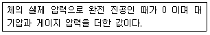
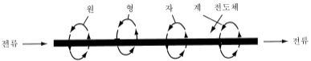
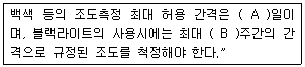
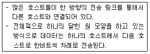

자기비파괴검사기능사 (2010-10-03 기출문제)
1과목: 자기탐상시험법
1. 방사선투과시험시 X선의 관전압에 해당되는 동일한 투과능력의 동위원소의 대등한 에너지를 무엇이라 하는가?
- 등가선질
- 필요에너지
- 등가 에너지
- 적절한 방사선
(정답률: 69%)

2. 각종 비파괴시험에 대한 설명 중 옳은 것은?
- 시험체의 양쪽 면에 접근할 수 없으면 초음파탐상 시험은 적용할 수 없다.
- 압력용기 용접부의 슬래그 혼입을 검출하는데 효과적인 방법은 방사선투과검사이다.
- 열교환기 배관의 응력부식 균열의 검출에는 방사선 투과시험이 가장 효과적으로 이용된다.
- 관, 선재 등의 표면결함을 고속으로 검출할 수 있는 효과적인 방법은 침투탐상시험이다.
(정답률: 46%)
3. 자속밀도(B)와 자력의 세기(H)의 관계식으로 옳은 것은?(단, μ는 투자율이다. )
- B=1/μㆍH
- B=1/Hㆍμ
- B=μ2H
- B=μㆍH
(정답률: 60%)
4. X선을 시험체에 쪼여 결정 내의 원자구조를 조사, 응력의 측정이나 결정입도 측정과 같은 품질관리나 재료시험이 가능한 것은 X선의 어떤 특성을 이용한 것인가?
- 투과 특성
- 회절 특성
- 진동 특성
- 분광 특성
(정답률: 31%)
5. 와전류탐상검사를 수행할 때 시험 부위의 두께 변화로 인한 전도도의 영향을 감소시키기 위한 방법으로 가장 적합한 것은?
- 전압을 감소시킨다.
- 시험주파수를 감소시킨다.
- 시험속도를 증가시킨다.
- fill factor(필 펙터)를 감소시킨다.
(정답률: 59%)
6. 비파괴검사법 중 니켈 제품 표면의 피로균열검사에 가장 적합한 것은?
- 방사선투과검사
- 초음파탐상검사
- 자분탐상검사
- 누설검사
(정답률: 70%)
7. 초음파탐상 시험방법에 속하지 않는 것은?
- 공진법
- 외삽법
- 투과법
- 펄스반사법
(정답률: 63%)
8. 수세성 형광침투액이 후유화성 형광침투액과 다른 점은?
- 비철금속에만 적용한다.
- 유화제가 필요하지 않다.
- 전처리를 하지 않아도 된다.
- 현상하기 전에 수세가 필요하다.
(정답률: 52%)
9. 와전류탐상시험에서 와전류의 침투깊이를 설명한 내용으로 틀린 것은?
- 주파수가 낮을수록 침투깊이가 깊다.
- 투자율이 낮을수록 침투깊이가 깊다.
- 전도율이 높을수록 침투깊이가 얕다.
- 표피효과가 작을수록 침투깊이가 얕다.
(정답률: 52%)
10. 각종 비파괴검사에 대한 설명 중 옳은 것은?
- 자분타상시험은 일반적으로 핀홀과 같은 점모양의 검출에 우수한 검사방법이다.
- 초음파탐상시험은 두꺼운 강판의 내부결함 검출이 방사선투과시험보다 우수하다.
- 침투탐상시험은 검사할 시험체의 온도와 침투액의 온도에 거의 영향을 받지 않는다.
- 육안검사는 인간 시감을 이용한 시험으로 보이스코프나 소형 TV 등을 사용할 수 없어 파이프 내면의 검사는 할 수 없다.
(정답률: 46%)
11. 다른 침투탐상시험과 비교하여 수세성 형광침투탐상 시험의 장점은?
- 밝은 곳에서 작업이 가능하다.
- 대형 단조품 검사에 적합하다.
- 소형 대량부품 검사에 적합하다.
- 장비가 간편하고 장소의 제약을 받지 않는다.
(정답률: 57%)
12. 누설검사에서 다음 설명이 나타내는 용어로 옳은 것은?

- 계기 압력
- 진공 압력
- 절대 압력
- 표준대기압
(정답률: 55%)
13. 초음파탐상시험에서 표준이 되는 장치나 기기를 조정하는 과정을 무엇이라 하는가?
- 감쇠
- 교정
- 상관관계
- 경사각탐상
(정답률: 65%)
14. 다른 누설검사법등과 비교하여 발표누설시험의 장점에 대한 설명 중 틀린 것은?
- 지시의 관찰이 용이하다.
- 누설 위치의 판단이 빠르다.
- 검사비용이 적게 들며 안전한 시험이다.
- 감도가 매우 높고, 정확한 교정이 용이하다.
(정답률: 46%)
15. 잔류자화법의 자분탐상검사가 가장 적합한 경우는?
- 시험품이 고응력을 가질 때
- 시험품의 모양이 불규칙할 때
- 시험품이 높은 투자력을 가질 때
- 시험품이 높은 보자력을 가질 때
(정답률: 34%)
16. 코일을 사용하여 자화할 때 적절한 전류-권선수 (AT)는 시험체의 어떤 함수에 가장 영향을 받는가?
- 넓이
- 무게
- 길이와 직경
- 전류의 자속
(정답률: 48%)
17. 직선 도선에 전류를 흘리면 그림과 같이 도선 주위에 자계가 생기며 자계의 방향은 전류의 방향에 대하여 직각이다. 이는 어떤 자화법과 가장 관계가 깊은가?

- 극간법
- 축통전법
- 자속관통법
- 선형자화법
(정답률: 48%)
18. 자분탐상 시험결과 나타난 지시의 관찰에 대한 설명으로 옳은 것은?
- 원칙적으로 자분모양이 형성된 직후 관찰하여야 한다.
- 비형광 자분모양을 충분히 식별할 수 있는 밝기200lx 이상이어야 한다.
- 형광자분모양을 식별하기 위하여 100lx이하의 어두운 곳에서 관찰하여야 한다.
- 형광자분모양을 충분히 식별하기 위해서 자외선등의 강도는 500μW/cm2 이상이어야 한다.
(정답률: 60%)
19. 시험체의 일부 또는 전체를 전자석 또는 영구자석의 자극사이에 접촉시켜 자화시키는 장치의 명칭은?
- 코일식자화장치
- 극간식 자화장치
- 프로드식 자화장치
- 직각통전식 자화장치
(정답률: 57%)
20. 직경 40mm, 길이 100mm인 봉을 코일법으로 검사할 때 필요한 자화전류는 몇 A인지를 구하고, 또 사용 장비의 최대 전류가 4000A 라면 검사품에 몇 회의 코일을 감아야 하는가?
- 2000A, 3회
- 2000A, 5회
- 18000A, 3회
- 18000A, 5회
(정답률: 33%)
2과목: 자기탐상관련규격
21. 자분탐상시험 장치 중 비접촉법에 의한 자화 기기는?
- 프로드법 장비
- 축통전법 장비
- 극간법 장비
- 코일법 장비
(정답률: 46%)
22. 자화된 물질이나 전류가 흐르는 도체의 내ㆍ외부 공간을 무엇이라고 하는가?
- 자계
- 상자성
- 강자성
- 포화점
(정답률: 70%)
23. 자분탐상검사 후 탈자를 하지 않아도 그 영향이 가장 적게 미치는 경우는?
- 자계 측정 계기의 부품을 검사한 경우
- 기어를 열처리 후 잔류법으로 검사한 경우
- 보자력이 큰 부품을 검사 후 전기아크용접을 하는 경우
- 기어의 축을 잔류법으로 검사하고 열처리 후 사용 하는 경우
(정답률: 46%)
24. 잔류법으로 자분탐상시험할 때 시험체가 서로 접촉하거나 또는 강자성체의 접촉했을때 누설자속에 의해 형성되는 의사모양의 자분지시를 무엇이라고 하는가?
- 자극지시
- 전류지시
- 재질경계지시
- 자기펜 흔적
(정답률: 52%)
25. 프로드법으로 탐상할 때 시험체의 두계가 3/4인치보다 작을 경우 자화전류를 프로드 간격 1인치당 몇 A로 하면 가장 적당한가 ?
- 50~80A
- 80~90A
- 90~110A
- 110~125A
(정답률: 42%)
26. 철강재료의 자분탐상 시험방법 및 자분모양의 분류 (KS D0213)에 따른 전처리에 대한 설명으로 틀린 것은?
- 시험체는 원칙적으로 단일 부품으로 분해한다.
- 건식용 자분을 사용하는 경우 표면을 잘 건조시킨다.
- 시험체와 전극의 접촉부분은 깨끗이 닦아 놓아야 한다.
- 전처리의 범위는 용접부의 경우 시험범위에서 모재측으로 약 5cm 이상으로 잡는다.
(정답률: 69%)
27. 철강재료의 자분탐상 시험방법 및 자분모양의 분류 (KS D0213)에서 형광자분탐상을 실시할 때 관찰면에서의 일광 또는 조명의 밝기는?
- 관찰면에서 20룩스 이하이어야 한다.
- 관찰명에서 50룩스 이하이어야 한다.
- 암실에서 90룩스 이상이어야 한다.
- 암실에서 110룩스 이상이어야 한다.
(정답률: 63%)
28. 철강재료의 자분탐상 시험방법 및 자분모양의 분류 (KS D0213)에서 자화방법과 그 부호가 바르게 연결된 것은?
- 프로드법 : P
- 극간법 : Y
- 직간통전법 : EA
- 자속관통법 : ER
(정답률: 76%)
29. 항공우주용 자기탐상 검사방법(KS W 4041)에서 비형광 자분법을 사용할 때 백생등을 검사 영역에 설치하는 경우 적절한 검사를 시행하기 위한 밝기는 적어도 몇 lx이상이 필요하다고 규정하고 있는가?
- 300
- 1024
- 1550
- 2150
(정답률: 60%)
30. 철강재료의 자분탐상 시험방법 및 자분모양의 분류(KS D0213)에 따른 탈자 전류의 세기로 적합한 것은?
- 시험할 때의 자화 전류보다 작게 한다.
- 시험할 때의 자화 전류보다 크게 한다.
- 가우스미터의 측정값이 10테슬라 이상이어야 한다.
- 가우스미터의 측정값이 1000가우스 이상이어야 한다.
(정답률: 42%)
31. 항공 우주용 자기탐상 검사방법(KS W 4041)에서 교류 전자요크는 76~152mm의 거리에서 적어도 몇 N의 하중을 달아 올리는 힘을 갖고 있어야 하는가?
- 13.3
- 18.1
- 33.6
- 44.5
(정답률: 25%)
32. 철강재료의 자분탐상 시험방법 및 자분모양의 분류(KS D0213)에서 시험결과, 독립한 자분모양으로서 그 길이가 나비의 3배 이상인 지시를 무엇이라고 하는가?
- 균열에 의한 자분모양
- 선상의 자분모양
- 연속한 자분모양
- 원형상의 자분모양
(정답률: 65%)
33. 철강재료의 자분탐상 시험방법 및 자분모양의 분류(KS D0213)에 따라 교류를 사용하여 자화하는 경우, 자분의 적용시기에 따라 원칙적으로 어떤 방법을 사용하는가?
- 잔류법
- 건식법
- 연속법
- 습식법
(정답률: 52%)
34. 철강재료의 자분탐상 시험방법 및 자분모양의 분류(KS D0213)에서 잔류법으로 탐상할 때, 시험체가 서로 접촉하거나 또는 강자성체에 접촉하여 누설자속에 의해 형성되는 의사모양의 자분지시를 무엇이라고 하는가?
- 전극지시
- 자극지시
- 재질경계지시
- 자기펜자국
(정답률: 50%)
35. 항공 우주용 자기탐상 검사방법(KS W 4041)의 조명장치 및 조도에 대한 [보기] 내용중 ( )안에 알맞은 수치는?

- A:30, B:1
- A:60, B:1
- A:90, B:2
- A:180, B:2
(정답률: 47%)
36. 항공우주용 자기탐상 검사방법(KS W 4041)에서는 탐상 결과를 기록하게 되어 있다. 이 기록된 내용은 별도의 지정 기간이 정해지지 않은 경우 몇 년간 보존하도록 규정하고 있는가?
- 1년
- 2년
- 3년
- 5년
(정답률: 48%)
37. 철강재료의 자분탐상 시험방법 및 자분모양의 분류(KS D0213)에 대한 통전시간과 자분의 농도에 대한 설명으로 옳은 것은?
- 잔류법의 통전시간은 원칙적으로 10~30초로 한다.
- 충격전류의 통전시간은 원칙적으로 1~3초로 한다.
- 형광 습식인 경우 자분농도는 2~5g/ 범위로 한다.
- 비형광 습식인 경우 자분농도는 2~10g/ 범위로 한다.
(정답률: 47%)
38. 철강재료의 자분탐상 시험방법 및 자분모양의 분류(KS D0213)에서 시험 기록의 기호 "C 3000" 의 의미는?
- 코일법을 사용하여 3000A의 교류직류를 흐르게 한다.
- 코일법을 사용하여 3000A의 직류전류를 흐르게 한다.
- 코일법을 사용하여 3000A의 맥류전류를 흐르게 한다.
- 코일법을 사용하여 3000A의 충격전류를 흐르게 한다.
(정답률: 46%)
39. 철강재료의 자분탐상 시험방법 및 자분모양의 분류(KS D0213)에서 탐상결과 확인된 자분모양이 흠에 의한 것이라 판정하기 곤란할 경우의 조치로 옳은 것은?
- 탈자를 하고 재시험한다.
- 있는 그대로 의사지시로 판정한다.
- 있는 그대로 자분모양으로 분류한다.
- 표면상태를 개선한 후 자분모양을 분류한다.
(정답률: 54%)
40. 철강재료의 자분탐상 시험방법 및 자분모양의 분류(KS D0213)에 따라 검사를 수행할 때 사용할 수 없는 시험장치는?
- 직류식 자화장치
- 영구자석을 이용한 자화장치
- 자외선 파장이 320~400nm인 자외선조사장치
- 필터면 10cm 의 거리에서 자외선강도가 80μW/cm2인 자외선 조사장치
(정답률: 63%)
3과목: 금속재료일반 및 용접일반
41. Web과 Log의 합성어로 자신의 관심사를 매일매일 일기처럼 기록하는 것으로 취향이 비슷한 사람들이 일상을 함께 공유 할 수도 있고, 다양한 의견들을 나눌 수 있는 것은?
- 카페
- 미니홈피
- 블로그
- 메신저
(정답률: 46%)
42. 인터넷에서 웹 사이트들을 위한 홈페이지를 위해 필요한 기억공간이나 FTP 서비스, 메일 서버 등을 위해 저장공간을 제공하고 유지해 주는 것은?
- ISP
- 웹호스팅
- DNS
- NIC
(정답률: 21%)
43. 아무런 돈을 받지 않고 제공되는 프로그램으로서 보통 판권은 여전히 개발자의 소유로 남아 있어 상업적 목적으로는 이용할 수 없도록 한 소프트웨어는?
- 셰어웨어
- 프리웨어
- 라이트웨어
- 포스트카드웨어
(정답률: 37%)
44. 다음이 설명하고 있는 네트워크 토폴로지는?

- 스타형
- 링형
- 버스형
- 타워형
(정답률: 36%)
45. 브라우저에 대한 설명으로 옳은 것은?
- 월드와이드웹에서 모든 정보를 볼 수 있도록 해 주는 응용프로그램이다.
- 사용자의 선택에 따라 관계가 있는 쪽으로 옮겨갈 수 있도록 조직화된 정보이다.
- 큰 파일이이나 프로그램이 차지하고 있는 저장 공간을 줄여주는 알고리즘이다.
- 하나의 컴퓨터 시스템에서 다른 시스템으로 파일을 전송하는 것이다.
(정답률: 39%)
46. 다음 중 청동합금에 해당되는 조성은?
- Sn – Be
- Zn - Mn
- Cu – Zn
- Cu - Sn
(정답률: 54%)
47. 탄소강은 900℃ 전후의 고온에서 불순물이 모여 있으면 가공 중에 균열이 생겨 열간 가공이 어려워 적열 메짐이 나타나는데, 이는 어떤 원소의 영향인가?
- W
- Mn
- P
- S
(정답률: 42%)
48. 다음 중 비중이 가장 큰 금속은?
- Ni
- Al
- Pt
- Mg
(정답률: 37%)
49. 금속을 자석에 접근시킬 때, 금속에 같은 극이 생겨 서로 반발하는 금속의 성질을 갖지 않는 것은 ?
- Sb
- Fe
- Au
- Bi
(정답률: 24%)
50. 다음 중 라우탈 합금의 특징을 설명한 것 중 틀린 것은?
- 시효경화성이 있는 합금이다.
- 규소를 첨가하여 주조성을 개선한 합금이다.
- 주조 균열이 크므로 사형 주물에 적합하다.
- 구리를 첨가하여 피삭성을 좋게 한 합금이다.
(정답률: 61%)
51. 금속의 상변태에 관한 설명으로 틀린 것은?
- 확산현 상변태에 공석 변태와 석출 현상 등이 있다.
- 상변태를 일으키기 위해서는 핵생성과 핵성장이 필요하다.
- 상변태로 인한 새로운 상의 크기가 증대함에 따라 실제 자유에너지는 점차 증가한다.
- 고체상태에서 하나 이상의 결정구조가 존재할 때 온도와 압력에 따라 결정구조가 바뀌는 것을 상변태라 한다.
(정답률: 33%)
52. 담금질한 강을 뜨임 열처리하는 이유로 옳은 것은?
- 강도를 증가시키기 위하여
- 경도를 증가시키기 위하여
- 인성을 증가시키기 위하여
- 취성을 증가시키기 위하여
(정답률: 52%)
53. Al의 양극산화 처리 방법이 아닌 것은?
- 망간산법
- 수산법
- 황산법
- 크롬산법
(정답률: 30%)
54. 다음 중 전기 저항이 0에 가까워 에너지 손실이 거의 없기 때문에 자기부상열차, 핵자기공명 단층 영상장치 등에 응용 할 수 있는 것은?
- 초전도 재료
- 제진 합금
- 비정질 재료
- 형상 기억 합금
(정답률: 74%)
55. 다음 중 비정질 합금에 대한 설명으로 틀린 것은?
- 균질한 재료이고 결정이방성이 없다.
- 강도는 높고 연성도 크나 가공경화는 일으키지 않는다.
- 제조법에는 단롤법, 쌍롤법, 원심급냉법 등이 있다.
- 액체 급냉법에서 비정질재료를 용이하게 얻기 위해서는 합금에 함유된 이종원소의 원자반경이 같아야 한다.
(정답률: 28%)
56. 회주철의 인장 강도 범위는 10~40kgf/mm2이다. 이를 MPa로 환산하면 몇 MPa인가?
- 9.8 ~ 39.2MPa
- 98 ~ 392MPa
- 980 ~ 3920MPa
- 9800 ~ 39200MPa
(정답률: 37%)
57. 재료에 어떤 일정한 하중을 가하고 어떤 온도에서 긴시간 동안 유지하면 시간이 경과함에 따라 스트레인이 증가하는 것을 측정하는 시험 방법은?
- 피로시험
- 충격시험
- 비틀림
- 크리프 시험
(정답률: 49%)
58. 산소용기 취급 시 주의사항에 대한 설명으로 틀린 것은?
- 용기취급 시 가능한 충격을 주지 말 것
- 용기는 각종 화기로부터 5m 이상 거리를 둘 것
- 용기 보관 장소는 항상 40℃ 이상을 유지할 것
- 가스 누설검사는 사용 전에 비눗물로 검사할 것
(정답률: 61%)
59. 비금속 개재물이 원인이며 모서리, T 이음 등에서 볼 수 있는 것으로 강의 내부에 모재 표명과 평행하게 층상으로 발생하는 균열은?
- 라미네이션
- 델라미네이션
- 라멜라테어
- 재열균열
(정답률: 31%)
60. 200V 전원에 30KVA의 교류 아크 용접기를 사용할 때 전원스위치에 끼울 퓨즈의 용량으로 가장 적합한 것은?
- 15A
- 150A
- 200A
- 250A
(정답률: 48%)